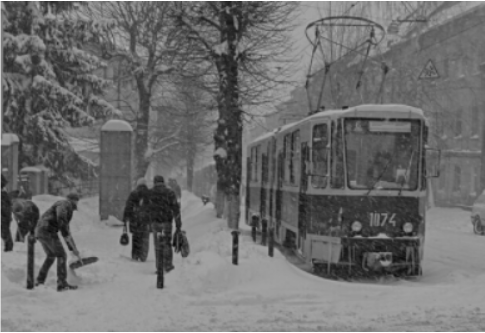
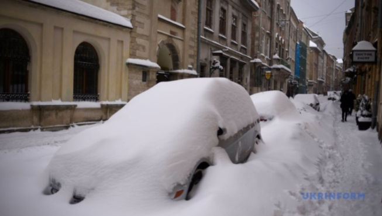
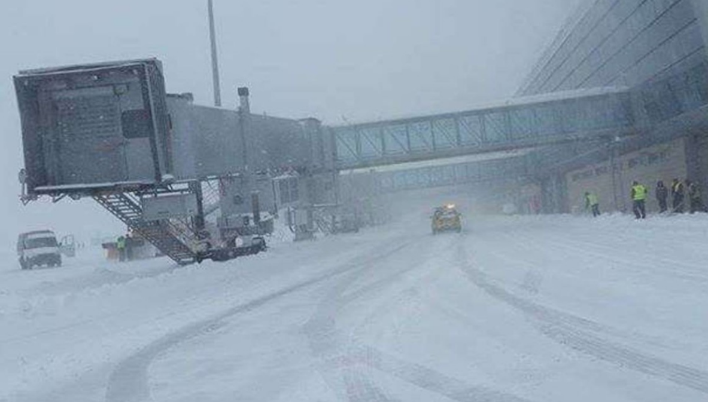
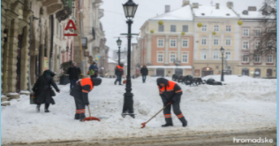
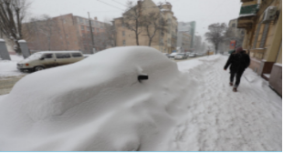

Упродовж останніх кількох днів через погіршення погодних умов снігоприбиральна техніка та працівники ЛКП працюють на вулицях міста цілодобово. До прибирання міста долучаються приватні підприємці, студенти та військові. https://zaxid.net/news/

Через негоду львів’ян закликають за можливості працювати з дому, на дистанційне навчання також перевели й учнів міських шкіл, а, щоб допомогти комунальникам у цей складний час, львів’яни взяли лопати та пішли прибирати вулиці біля своїх домівок. https://zaxid.net/statti_tag50974/